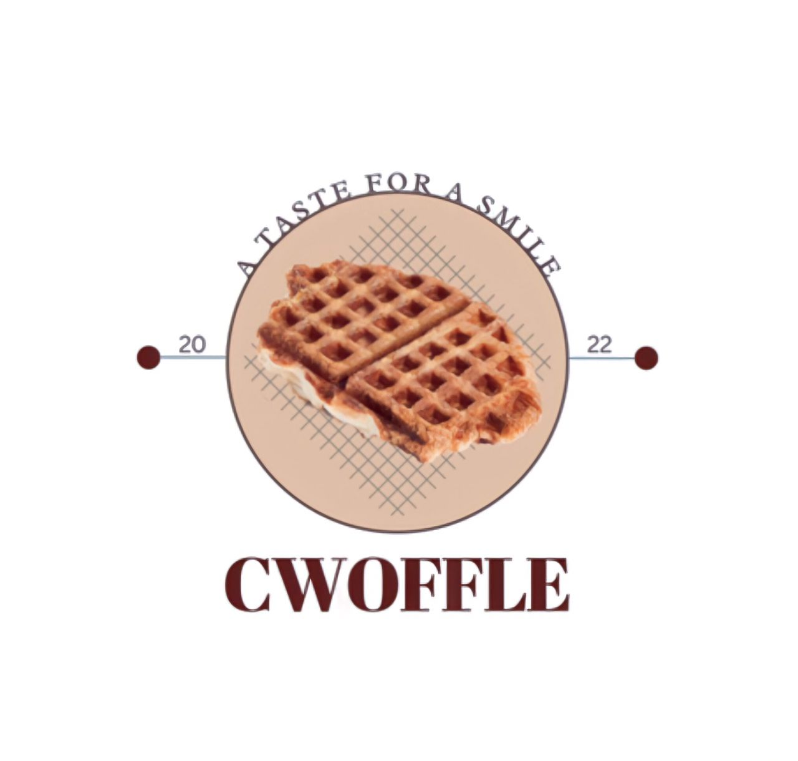

house of
cwoffle
- open everyday | 10am - 10pm -



Using the words croissant and waffle as a base, we get the word croffle. When croissant dough is cooked on a waffle iron, it seems to be a waffle but is a croissant—a croffle!
In the past, the Korean market was the only one where waffle-shaped croissants were well-known, but now we want to bring them to Malaysia.
Popular Korean Street cuisine known as croffle offers a wide range of flavors and toppings, is quick and simple to prepare, and is also ready to eat. For instance, Lotus Bischoff, Matcha, Nutella, and numerous others.